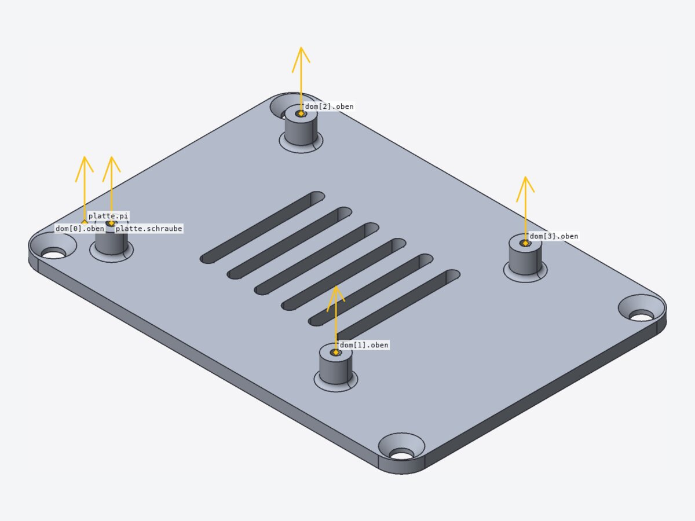
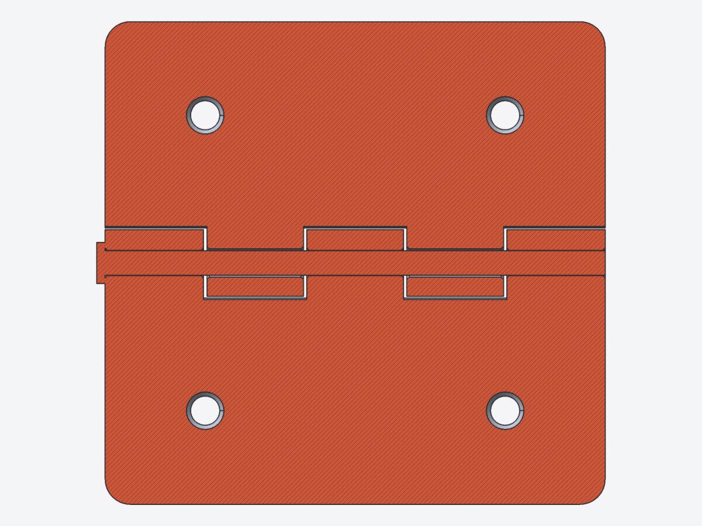

19 parametrische Modelle aus examples/alltag/: Haushalt, Schreibtisch, Werkstatt und typische Maschinenbauteile – vom Becher bis zum Stehlagerbock.
Die Sammlung dient zweierlei: als Vorlage für eigene Teile (jedes Modell ist ein Modul mit Standardwerten, alle Maße in mm) und als Testsuite, die die Sprache in der Breite nutzt – Raster und Anker, Verrundung und Fase über Zonen, shell, loft, sweep, Profile, include/use, benannte Instanzen als Bauteile. Die Regression tests/alltag/check.sh prüft alle Modelle; gefundene Fehler und Schwächen stehen in examples/alltag/README.md.
Je Modell zeigt der Katalog eine Seite mit Beschreibung, Rendering, Ansichten, Kenndaten, Parametern und verwendeten Sprachmitteln; Baugruppen haben eine zweite Seite mit Bauteilen, gemessenen Abständen und einem Schnitt bzw. den Ankern. Alle Werte sind mit der CLI gemessen.
Ein Modell öffnen
cad examples/alltag/becher.scadDesktop-UI: Editor und 3Dcad examples/alltag/gehaeuse/Baugruppe als Projekt (Ordner)cad render examples/alltag/becher.scad -o becher.png --views allheadless: Bildcad outline examples/alltag/becher.scadParameter, Raster, Anker, Bauteilecad measure examples/alltag/becher.scad --volume --colorsVolumen, Masse je Farbecad export examples/alltag/zahnrad.scad --all-parts -o teile/STL/STEP/3MF je Bauteil
19Modelle
7mit mehreren Bauteilen
36Bauteile
1,46 kgPLA für alles
Stand 23.10.2026, Commit e55bcbe · erzeugt mit node tools/report/katalog.mjs · Bilder cad render --view iso --perspective, eingepasst · Masse: PLA 1,24 g/cm³ · Kernel-Zeit: scene.stats.kernel_ms von cad eval --no-daemon
Ständer für ein Telefon bis 12 mm Dicke. Das Seitenprofil ist ein Polygon aus Punkten eines 2D-Rasters und wird über die Breite w = 70 mm extrudiert; die Lehne (95 mm, Wand t = 5 mm) steht im Winkel a = 65° zur Waagrechten, ein dreieckiges Fenster entlastet sie. Ein Kabelloch Ø 9 mm mit Kanal unter dem Boden nimmt das Ladekabel auf. Innenecken von Lippe und Ablage sowie die Lippenoberkante sind über Zonen an Rasterlinien mit zwei Radien verrundet.
Raster (grid)AnkerAnker mit dirbenannte InstanzenFunktionletpolygonlinear_extrudefillet-Zonenzonebox(a, b)
Öffnencad examples/alltag/handystaender.scadheadlesscad render examples/alltag/handystaender.scad -o bild.png --views all
02
Becher mit Henkel
Einzelteil
Trinkbecher als konischer Rotationskörper (Radius unten ru = 36 mm, oben ro = 41 mm, Höhe h = 95 mm), der mit shell und Wand 2,8 mm oben geöffnet wird. Die Bodenkante ist über eine Zone an der Bodenebene mit r 6 mm verrundet, der Trinkrand über eine zweite Zone. Der Henkel (Ø 9 mm) ist ein sweep eines Kreises entlang eines Spline-Pfads, dessen Enden radial in der Wand sitzen, und mit union(fillet = …) angesetzt.
Raster (grid)AnkerAnker mit dirbenannte InstanzenFunktionpolygonsplinerotate_extrudesweepshellfillet-Zonenzoneunion(fillet)
Öffnencad examples/alltag/becher.scadheadlesscad render examples/alltag/becher.scad -o bild.png --views all
03
Kabelclip für die Tischkante
Einzelteil
Kabelhalter zum Aufstecken auf eine Tischplatte von dicke = 19 mm (Spiel 0,4 mm). Die C-Klammer ist ein extrudiertes Profil (Wand 3,5 mm, Arme 28 und 18 mm) mit Klemmnoppe; darüber sitzt ein Block mit n = 4 Kabelkanälen Ø 6 mm im Abstand 12 mm, die von oben eingeführt werden. Die Kanäle liegen an indizierten Rasterebenen, ihre Kanten sind mit difference(fillet = …) verrundet, die Innenecken der Klammer über Zonen.
Raster (grid)indizierte RasterebenenAnkerAnker mit dirbenannte InstanzenListen-Komprehensionforpolygonlinear_extrudefillet-Zonenzonedifference(fillet/chamfer)box(a, b)cylinder(a, b, r)
Öffnencad examples/alltag/kabelclip.scadheadlesscad render examples/alltag/kabelclip.scad -o bild.png --views all
04
Wandhaken
Einzelteil
Haken für Jacke oder Handtuch: Wandplatte 32 × 80 × 6 mm mit verrundeten Ecken (r 8 mm), gefaster Vorderkante und zwei Senkbohrungen (Ø 4,2 mm, Kopf Ø 8,5 mm). Fase und Verrundung sind verschachtelt, so dass die Fase auch die Randkanten der Verrundung erfasst. Der Haken (Ø 9 mm, Ausladung 38 mm) ist ein sweep entlang eines Spline-Pfads mit Kugelknauf Ø 14 mm, angesetzt mit union(fillet = …).
Raster (grid)AnkerAnker mit dirbenannte Instanzenforsplinesweepfillet-Zonenchamfer-Zonenzoneunion(fillet)box(a, b)Kegel (r1, r2)sphere
Öffnencad examples/alltag/wandhaken.scadheadlesscad render examples/alltag/wandhaken.scad -o bild.png --views all
05
Seifenschale
Einzelteil
Seifenschale 115 × 80 × 24 mm mit Ablauf. Die Wanne ist ein Quader, dessen senkrechte Ecken (r 14 mm) und Bodenkanten über verschachtelte Zonen verrundet werden und den shell (Wand 2,2 mm) oben öffnet. n = 7 runde Auflagerippen sind cylinder(a, b, r) zwischen Rasterpunkten, dazwischen liegen Ablaufschlitze mit verrundeten Kanten; unten stehen vier Füße (3 mm).
Raster (grid)indizierte RasterebenenAnkerAnker mit dirbenannte InstanzenListen-Komprehensionforshellfillet-Zonenzonedifference(fillet/chamfer)box(a, b)cylinder(a, b, r)
Öffnencad examples/alltag/seifenschale.scadheadlesscad render examples/alltag/seifenschale.scad -o bild.png --views all
06
Stiftebox
Einzelteil
Stiftebox mit drei hohen Fächern (Breiten 38 / 26 / 26 mm, Tiefe 70 mm, Höhe 95 mm) und einem flachen vorderen Fach (22 mm tief, 45 mm hoch), Wand 2,4 mm. Die Fachgrenzen sind indizierte Rasterebenen, die eine rekursive Funktion aus der Liste der Fachbreiten berechnet. Vier verschachtelte Zonenblöcke verrunden die senkrechten Kanten (außen r 5 mm, Taschen r 2 mm) und die Taschenböden und fasen die hinteren Oberkanten; die Oberkanten des vorderen Fachs bleiben scharf (Kernel-Grenze F6).
Raster (grid)AnkerAnker mit dirbenannte InstanzenFunktionRekursionListen-Komprehensionforif / ?:fillet-Zonenchamfer-Zonenzonebox(a, b)
Öffnencad examples/alltag/stiftebox.scadheadlesscad render examples/alltag/stiftebox.scad -o bild.png --views all
07
Türstopper
Einzelteil
Keil 120 mm lang, 44 mm breit und hinten 32 mm hoch. Der Körper ist ein loft durch drei Trapezprofile (Höhe hinten, Mitte 14 mm, Spitze 3 mm), liegend ausgerichtet mit rotate([90, 0, 90]); seine Unterkante ist vorher über eine Zone an der Bodenebene gefast. Oben liegt eine Griffmulde, unten 6 Querrillen gegen Rutschen, hinten ein Aufhängeloch Ø 8 mm.
Raster (grid)indizierte RasterebenenAnkerAnker mit dirbenannte InstanzenFunktionListen-Komprehensionforpolygonloftchamfer-Zonenzonebox(a, b)cylinder(a, b, r)sphere
Öffnencad examples/alltag/tuerstopper.scadheadlesscad render examples/alltag/tuerstopper.scad -o bild.png --views all
08
Topfuntersetzer
Einzelteil
Untersetzer Ø 180 mm, 8 mm hoch: drei konzentrische Ringe (Mittenradien 36 / 62 / 87 mm, Steg 6 mm) als rotate_extrude eines Rechtecks in einer for-Schleife, verbunden durch 8 Speichen und eine Mittelscheibe (r 20 mm). Alle Oberkanten von Ringen und Speichen werden in einem Block über eine Zone an der Deckebene gefast; unten liegen drei Mulden für Gummifüße Ø 10 mm.
Raster (grid)AnkerAnker mit dirbenannte Instanzenforrotate_extrudechamfer-Zonenzonebox(a, b)
Öffnencad examples/alltag/topfuntersetzer.scadheadlesscad render examples/alltag/topfuntersetzer.scad -o bild.png --views all
09
Flanschplatte
Einzelteil
Flansch Ø 120 mm, 12 mm stark, mit Bund Ø 60 mm (Höhe 28 mm) und Bohrung Ø 32 mm. Der Querschnitt ist ein Polygon aus einem 2D-Raster, gedreht mit rotate_extrude; auf dem Lochkreis Ø 90 mm liegen 6 Durchgangslöcher Ø 11 mm (M10), dazu eine Dichtnut 1,5 mm tief. Den Übergang Bund/Scheibe verrundet ein eigenes Modul als Zone (ringzone), Bohrungs- und Außenkanten sind über Volumenzonen gefast.
Raster (grid)AnkerAnker mit dirbenannte Instanzenforpolygonrotate_extrudefillet-Zonenchamfer-Zonendifference(fillet/chamfer)
Öffnencad examples/alltag/flansch.scadheadlesscad render examples/alltag/flansch.scad -o bild.png --views all
10
Stehlagerbock 608
Einzelteil
Lagerbock für ein Rillenkugellager 608 (22 × 8 mm), Achshöhe 30 mm. Die Grundplatte 80 × 30 × 8 mm hat zwei Langlöcher für M6 (6,5 × 14 mm, Hilfsmodul) zum Ausrichten; das Lagerauge (r 20 mm, 14 mm breit) ist ein Quader mit tangential anschließendem cylinder(a, b, r) und hat eine Anschlagschulter Ø 18 mm. Die Kehlen rund um das Auge entstehen über Zonen an Rasterlinien in x, y und z.
Raster (grid)AnkerAnker mit dirbenannte Instanzenforfillet-Zonenchamfer-Zonenzonedifference(fillet/chamfer)box(a, b)cylinder(a, b, r)
Öffnencad examples/alltag/lagerbock.scadheadlesscad render examples/alltag/lagerbock.scad -o bild.png --views all
11
Montagewinkel mit Rippe
Einzelteil
Winkel mit Schenkeln 60 und 50 mm, 40 mm breit und 5 mm stark, mit n_rippen = 1 Versteifungsrippe (4 mm dick, 30 mm lang). Die Rippen sind extrudierte Dreiecke an indizierten Rasterebenen; Innenkante und Rippenanschlüsse werden in einem Zonenblock verrundet, so dass die Eckübergänge sauber laufen. Die Bohrungen Ø 5,5 mm (M5) sind mit difference(chamfer = …) gefast.
Raster (grid)AnkerAnker mit dirbenannte InstanzenListen-Komprehensionforpolygonlinear_extrudefillet-Zonenzonedifference(fillet/chamfer)box(a, b)cylinder(a, b, r)
Öffnencad examples/alltag/winkel_rippe.scadheadlesscad render examples/alltag/winkel_rippe.scad -o bild.png --views all
12
Kühlkörper
Einzelteil
Strangpress-Kühlkörper 60 × 50 mm, Grundplatte 5 mm, Gesamthöhe 25 mm, mit n = 9 Rippen à 1,8 mm. Die Rippenlage steht als indizierte Rasterebenen aus einer Liste; die Rippenfüße sind über Zonen an Rasterlinien in einer for-Schleife verrundet (r 1,5 mm), die Köpfe über eine Zone an der Kopfebene fast voll gerundet. Zwei Bohrungen M3 im Abstand 40 mm liegen zwischen den Rippen, ein Anker markiert die Wärmequelle.
Raster (grid)indizierte RasterebenenAnkerAnker mit dirbenannte InstanzenListen-Komprehensionforfillet-Zonenzonebox(a, b)
Öffnencad examples/alltag/kuehlkoerper.scadheadlesscad render examples/alltag/kuehlkoerper.scad -o bild.png --views all
13
Stirnradpaar
Baugruppe
Zwei Stirnräder mit Modul m = 2 mm und 20 bzw. 12 Zähnen im Eingriff, Achsabstand 32 mm, Breite 10 mm. Die Evolventenflanken entstehen als Polygon aus Listenfunktionen (let, each, concat) und werden linear extrudiert; die Zahndicke ist für das Flankenspiel leicht verringert. Rad 1 hat Nabe, Passfedernut und Erleichterungslöcher, Rad 2 eine D-Bohrung für eine Motorwelle 5 mm.
Zweiteilige Schelle für ein Rohr Ø 32 mm: die Halbringe (4 mm stark, 20 mm breit) sind rotate_extrude(angle = 180) eines Rechtecks, mit Laschen und Bohrungen Ø 5,5 mm (M5); das Unterteil (mirror) trägt einen Stutzen mit Kernloch für M8. Oberteil, Unterteil und ein Prüfrohr sind Bauteile in einem gemeinsam gedrehten Block. Im offenen Zustand klafft an den Laschen der Spalt 2 mm.
Raster (grid)AnkerAnker mit dirbenannte Instanzenforif / ?:rotate_extrudechamfer-Zonenzonedifference(fillet/chamfer)box(a, b)cylinder(a, b, r)mirror
Öffnencad examples/alltag/rohrschelle.scadheadlesscad render examples/alltag/rohrschelle.scad -o bild.png --views all
14
Rohrschelle – Passung
Baugruppe
Bauteil
Modul
Hülle (B × T × H) mm
Volumen cm³
Masse PLA g
oben
halbschelle
20,0 × 64,0 × 20,0
6,69
8,3
unten
halbschelle
20,0 × 64,0 × 30,0
7,87
9,8
rohr
pruefrohr
60,0 × 32,0 × 32,0
11,31
14,0
Paar (measure --clearance)
Abstand
Bedeutung
oben ↔ unten
2,000 mm
Klemmspalt an den Laschen
oben ↔ rohr
0,035 mm
Rohr liegt am Oberteil an
unten ↔ rohr
0,035 mm
Rohr liegt am Unterteil an
measure --interference
keine Kollision (Toleranz 0,001 mm³)
Schnitt x = 10 (Mitte der Schelle, quer zur Rohrachse), Blick von +x: Halbringe mit Laschen und Bohrungen M5, Klemmspalt 2 mm, Stutzen mit Kernloch für M8, Prüfrohr.
Platte 100 × 72 × 3 mm für einen Raspberry Pi (Lochbild 58 × 49 mm, M2.5). Die Abstandshalter (6 mm) sind ein eigenes Modul mit Anker, in der Schleife als benannte Instanzen dom[i] gesetzt und mit union(fillet = …) angesetzt. Dazu kommen 6 Lüftungsschlitze, vier Befestigungslöcher M4 mit Senkung und verrundete Ecken (r 6 mm). Ein farbiger Platinen-Dummy 85 × 56 × 1,6 mm liegt als zweites Bauteil am Anker der Platte.
Raster (grid)AnkerAnker mit dirbenannte InstanzenListen-Komprehensionforif / ?:fillet-Zonenzoneunion(fillet)$filletbox(a, b)Kegel (r1, r2)color
Öffnencad examples/alltag/pi_platte.scadheadlesscad render examples/alltag/pi_platte.scad -o bild.png --views all
15
Montageplatte Raspberry Pi – Passung
Baugruppe
Bauteil
Modul
Hülle (B × T × H) mm
Volumen cm³
Masse PLA g
platte
pi_platte
100,0 × 72,0 × 9,0
20,15
25,0
pi
pi_platine
85,0 × 56,0 × 17,6
25,90
32,1
Paar (measure --clearance)
Abstand
Bedeutung
platte ↔ pi
0,000 mm
Platine liegt auf den Domen
measure --interference
keine Kollision (Toleranz 0,001 mm³)

Platte mit eingeblendeten Ankern (gelb): die Anker oben der Dome tragen die Platine.
Prüfencad measure examples/alltag/pi_platte.scad --interference --clearance platte pi
16
Elektronikgehäuse
Baugruppe
Gehäuse für eine Platine 70 × 50 mm: innen 76 × 56 mm, Höhe 32 mm, Wand 2 mm, Ecken r 5 mm. Das Unterteil ist ein verrundeter Quader, den shell öffnet; vier Schraubdome (Kernloch Ø 2,5 mm) sind als dom[i] mit union(fillet = …) angesetzt. Der Deckel (2,5 mm, Zentrierrand 3 mm, Spiel 0,2 mm) sitzt am Anker deckel_auflage, die Schrauben M3 sind Bauteile s[0] … s[3]. Maße stehen in masse.scad (include), Teile in teile.scad (use); explosion > 0 zieht die Baugruppe auseinander.
Druckbares Scharnier 60 mm aus Blatt A, Blatt B und Stift mit 5 Gelenkaugen (r 4 mm, Blattstärke 2,5 mm). Die Augen beider Blätter kommen aus derselben Funktion, so dass das Spiel von 0,4 mm überall gleich ist; die Freiräume entstehen per for mit Schrittweite. Blatt A hat die Bohrung 3 mm (Stift eingeklebt), Blatt B 3,4 mm (dreht frei), der Stift Ø 2,95 mm. Die Variable winkel = 180° dreht Blatt B um die Achse.
Öffnencad examples/alltag/scharnier/scharnier.scadheadlesscad render examples/alltag/scharnier/scharnier.scad -o bild.png --views all
17
Scharnier – Passung
Baugruppe
Bauteil
Modul
Hülle (B × T × H) mm
Volumen cm³
Masse PLA g
a
blatt
60,0 × 33,0 × 8,0
5,15
6,4
b
blatt
60,0 × 33,0 × 8,0
4,57
5,7
stift
stift
61,0 × 5,0 × 5,0
0,43
0,5
Paar (measure --clearance)
Abstand
Bedeutung
a ↔ b
0,397 mm
Spiel der Augen
stift ↔ b
0,223 mm
Lagerspiel
stift ↔ a
0,000 mm
Stiftkopf liegt an
measure --interference
keine Kollision (Toleranz 0,001 mm³)

Schnitt z = 0 (Mittelebene der Blätter), Draufsicht: Augen von A (unten) und B (oben) abwechselnd mit axialem Spiel, Stift in den Bohrungen.Schnitt x = 18 (zweites Auge, Blatt B), Blick von +x, 3,5-fach: Stift Ø 2,95 in der Bohrung 3,4 von B; links Blatt A mit Freiraum.
Prüfencad measure examples/alltag/scharnier/scharnier.scad --interference --clearance a b
18
Pflanztopf mit Untersetzer
Baugruppe
Der Topf geht per loft vom abgerundeten Quadrat (72 mm, Superellipse als spline aus einer Funktion) zur runden Öffnung Ø 100 mm, Höhe 90 mm, Wand 2,2 mm, Boden 3 mm; er steht auf 4 mm hohen Füßen und hat Abflusslöcher. Die Wand ist die Differenz zweier Lofts. Der Untersetzer ist ein rotate_extrude, mit shell oben geöffnet und über Zonen verrundet. Der Topf steht mit dem Anker aufstand auf dem Anker boden des Untersetzers.
Brett 200 × 70 × 12 mm mit 5 eingeklebten Haken. Es hat über Zonen verrundete Ecken und eine gefaste Vorderkante, hinten zwei Schlüssellochaufhängungen und oben eine Briefrille. Die Haken sind ein sweep entlang eines Spline-Pfads mit Kugelknauf; ihr Zapfen Ø 6 mm sitzt in einer Bohrung Ø 6,3 mm (Kleberspalt). Die Haken sind Bauteile h[0] … h[4] aus einer for-Schleife, die Maße stehen in masse.scad.
 01 HandyständerS. 4
01 HandyständerS. 4 03 KabelclipS. 6
03 KabelclipS. 6 04 WandhakenS. 7
04 WandhakenS. 7 06 StifteboxS. 9
06 StifteboxS. 9 09 FlanschplatteS. 12
09 FlanschplatteS. 12 10 Stehlagerbock 608S. 13
10 Stehlagerbock 608S. 13 11 MontagewinkelS. 14
11 MontagewinkelS. 14 13 StirnradpaarS. 16
13 StirnradpaarS. 16 14 RohrschelleS. 18
14 RohrschelleS. 18 16 ElektronikgehäuseS. 22
16 ElektronikgehäuseS. 22 17 ScharnierS. 24
17 ScharnierS. 24 18 PflanztopfS. 26
18 PflanztopfS. 26


![Schnitt x = 20 (durch Haken h[0]), Blick von +x: Zapfen in der Bohrung, Fase der Vorderkante, Briefrille oben.](img/schluesselbrett-schnitt.jpg)